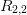

9.3 O método de Romberg
O método de Romberg é um método simplificado para construir quadraturas de alta ordem.
Considere o método de trapézios composto aplicado à integral

 a aproximação desta integral pelo método dos trapézios composto
com malha de largura constante igual a h. Aqui
a aproximação desta integral pelo método dos trapézios composto
com malha de largura constante igual a h. Aqui  para algum
para algum  inteiro,
i.e.:
inteiro,
i.e.:

Teorema 9.3.1. Se  é uma função analítica no intervalo
é uma função analítica no intervalo  , então
a função
, então
a função  admite uma representação na forma
admite uma representação na forma

Para um demonstração, veja [4]. Em especial observamos que

 .
.
A ideia central do método de Romberg, agora, consiste em usar a extrapolação
de Richardson para construir métodos de maior ordem a partir do métodos dos
trapézios para o intervalo 
Exemplo 9.3.1. Construção do método de quarta ordem.

 :
: 
 ,
, ![h
I(h) = --[f (a) + f(b)]
2
I(h∕2) = h-[f (a) + 2f (c) + f(b)], c = a-+-b
4 2](main3638x.png)
![4I(h∕2) - I(h) h h
--------------- = --[f(a) + 2f (c) + f (b)] ---[f (a) + f (b)]
3 3 6
= h-[f(a) + 4f (c) + f (b)]
6](main3639x.png)
A partir de agora, usaremos a seguinte notação

Observamos que os pontos envolvidos na quadratura  são os mesmos
pontos envolvidos na quadratura
são os mesmos
pontos envolvidos na quadratura  acrescidos dos pontos centrais,
assim, temos a seguinte fórmula de recorrência:
acrescidos dos pontos centrais,
assim, temos a seguinte fórmula de recorrência:

Definimos  para
para  como o esquema de ordem quatro obtido da
fórmula do exemplo 9.3.1:
como o esquema de ordem quatro obtido da
fórmula do exemplo 9.3.1:

 representam então os valores obtidos pelo método de Simpson
composto aplicado a uma malha composta de
representam então os valores obtidos pelo método de Simpson
composto aplicado a uma malha composta de  pontos.
pontos.
Similarmente os valores de  são os valores obtidos pela quadratura
de ordem  obtida via extrapolação de Richardson. Pode-se mostrar
que
obtida via extrapolação de Richardson. Pode-se mostrar
que

Exemplo 9.3.2. Construa o esquema de Romberg para aproximar o valor
de  com erro de ordem 8.
com erro de ordem 8.
O que nos fornece os seguintes resultados:
| 55,59815 | 0,000000 | 0,000000 | 0,000000 |
| 30,517357 | 22,157092 | 0,000000 | 0,000000 |
| 20,644559 | 17,353626 | 17,033395 | 0,000000 |
| 17,565086 | 16,538595 | 16,484259 | 16,475543 |
Ou seja, temos:
 |
usando uma aproximação de ordem 8.
Exemplo 9.3.3. Construa o esquema de Romberg para aproximar o valor
de  com erro de ordem 12.
com erro de ordem 12.
O que nos fornece:
| 218,3926 | |||||
| 111,91458 | 76,421909 | ||||
| 66,791497 | 51,750469 | 50,105706 | |||
| 51,892538 | 46,926218 | 46,604601 | 46,549028 | ||
| 47,782846 | 46,412949 | 46,378731 | 46,375146 | 46,374464 | |
| 46,72661 | 46,374531 | 46,37197 | 46,371863 | 46,37185 | 46,371847 |
Ou seja, temos:
 |
com uma aproximação de ordem 12.
Exercícios
Para cada integrando encontre o função  que melhor se ajusta aos dados, onde
que melhor se ajusta aos dados, onde  . Discuta os resultados com base
no teorema envolvido na construção do método de Romberg.
. Discuta os resultados com base
no teorema envolvido na construção do método de Romberg.
Resposta.


E 9.3.1. Calcule os valores da quadratura de Romberg de  até
até  para
para
 . Não use rotinas prontas neste problema.
. Não use rotinas prontas neste problema.
Resposta.
| 1.5707963 | 2.0943951 | ||
| 1.8961189 | 2.0045598 | 1.9985707 | |
| 1.9742316 | 2.0002692 | 1.9999831 | 2.0000055 |
E 9.3.2. Sem usar rotinas prontas, use o método de integração de Romberg para
obter a aproximação  das seguintes integrais:
das seguintes integrais:


Resposta. 0.7468337,2.4606311, 1.6595275.
E 9.3.3. Encontre uma expressão para  em termos de
em termos de  e verifique
o método de Romberg
e verifique
o método de Romberg  é equivalente ao método de Simpson.
é equivalente ao método de Simpson.
E 9.3.4. Considere o problema de aproximar numericamente o valor de
- Calcule
 e observe os valores obtidos.
e observe os valores obtidos.
- Calcule
 e observe os valores obtidos.
e observe os valores obtidos.
- Calcule
 e observe os valores obtidos.
e observe os valores obtidos.
- Discuta os resultados anteriores e proponha uma estratégia mais eficiente para calcular o valor da integral.
Resposta.  ,
,  ,
,  ,
,  ,
,  . O
valor desta integral com oito dígitos corretos é aproximado por
. O
valor desta integral com oito dígitos corretos é aproximado por  .
.
* As versões do livro disponíveis no site podem estar desatualizadas, veja a versão PDF atual no repositório GitHub oficial do projeto.
- IME - UFRGS